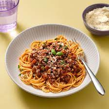

Spaghetti bolognese recipe

Delicious Spagheti Bolognese recipe
This is a simple quick easy recipe that will be enjoyed by all.
Ingredients
- Garlic
- Onion
- Tomato paste
- Beef Mince
- Canned Chopped Tomatoes
- Spaghetti pasta noodles
Steps
- Saute the Garlic and Onion
- Add the Tomato paste
- Add the Beef Mince and Chopped tomatoes
- Whilst the spaghetti mix is simmering away. Cook the Pasta according to packet instructions.